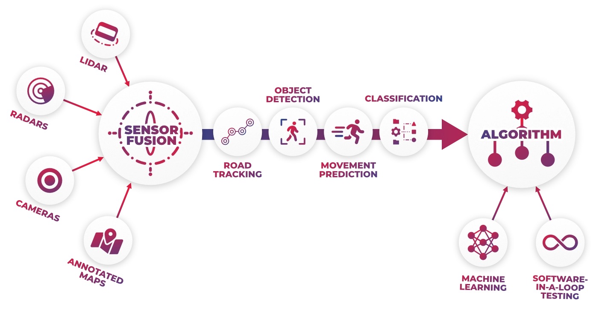
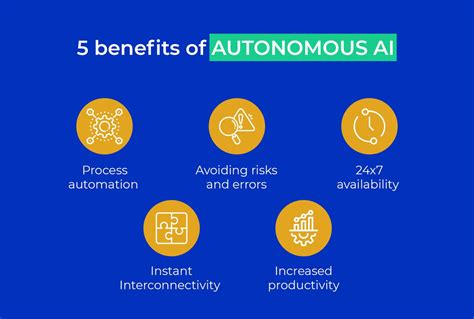

AI Driving the Next Era of Mobility
Self-driving technology is reshaping how people travel, with AI systems taking the lead in safety and efficiency. Here are some notable applications:

Figure 1: The sensory array – How the vehicle "sees" its surroundings
- Autonomous Ride Services: Companies such as Waymo deploy AI-powered taxis capable of navigating busy city streets. (Appinventiv)
- Sensor Fusion: AI integrates radar, lidar, and camera inputs to detect pedestrians, vehicles, and obstacles in real time. (NVLA)
- Predictive Safety: Algorithms anticipate potential collisions and adjust speed or direction to avoid danger. (IoT For All)
- Environmental Awareness: Advanced perception systems interpret surroundings with precision, enabling smoother navigation. (Waymo)

Figure 2: The Logic Flow – From raw sensor data to driving decisions
These innovations aim to reduce accidents caused by human error and improve traffic management worldwide.

Figure 3: Key advantages of adopting AI in transportation